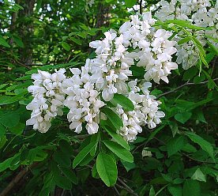

マーク式解答選択シート （白）
外観
清澄度
澄んだ
やや濁った
濁った
輝き
輝きのある
落ち着いている
モヤがかかった
色調(2)
グリーンがかった
レモンイエロー
イエロー
黄金色がかった
黄金色
トパーズ
オレンジ
アンバー
濃淡
無色に近い
淡い
やや淡い
やや濃い
濃い
非常に濃い
粘性
さらっとした
やや軽い
やや強い
強い
外観の印象(2)
若々しい
軽快な
成熟度が高い
濃縮感がある
やや熟成した
熟成した
熟成のニュアンスが見え
酸化が進んだ
完全に酸化している
香り
第一印象(2)
閉じている
控えめ
開いている
心地よい
チャーミングな
華やかな
凝縮感のある
深みのある
複雑な
力強い
特徴
果実・花・植物(4)
柑橘類
青リンゴ
リンゴ
洋梨
花梨
白桃
アプリコット
パイナップル
マスカット
パッションフルーツ
バナナ
マンゴー
ライチ
スイカズラ
アカシア

白バラ
キンモクセイ
菩提樹
ミント
アニス
ヴェルヴェーヌ
藁のような
タイム
ヘーゼルナッツ
アーモンド
特徴
香辛料・芳香
化学物質(4)
石灰
火打石
貝殻
鉱物
海の香り
パン・ドゥ・ミ
トースト
ジンジャーブレッド
煙・燻製
ヴァニラ
シナモン
白胡椒
コリアンダー
丁子
香木
蜂蜜
花の蜜
乳製品
硫黄
麝香（じゃこう）
お香
白檀（びゃくだん）
蜜蝋
フェノール
香りの印象(2)
若々しい
嫌気的な
熟成感が現れている
第1アロマが強い
第2アロマが強い
酸化熟成の段階にある
酸化した
木樽からのニュアンス
ニュートラル
発展的な
複雑性のある
味わい
アタック
軽い
やや軽い
やや強い
強い
インパクトのある
甘み
（アルコールのボリュームも含む）
ドライ
ソフトな
まろやか
豊かな
残糖がある
酸味
爽やかな
堅い
力強い
シャープな
なめらかな
生き生きとした
厳しい
攻撃的な
苦味
控えめ
穏やかな
コク（深み）を与える
旨味をともなった
強い（突出した）
バランス
スリムな
スムースな
溌剌とした
ドライな
まろやかな
ねっとりした
コンパクトな
ジューシーな
豊潤な
厚みのある
ふくよかな
アルコール
軽い
やや軽い
中程度
やや強い
強い
~12%
12.5%
13%
13.5%
14%
14.5%~
熱さを感じる
余韻
短い
やや短い
やや長い
長い
結論
評価
シンプル、フレッシュ感を楽しむ
成熟度が高く、豊かな
エレガントで、ミネラリー
濃縮し、力強い
ポテンシャルがある
適正温度
8度未満
8-10度
11-14度
15-18度
19度以上
グラス
小ぶり
中庸
大ぶり
収穫年
2016
2017
2018
2019
2020
生産国
フランス
イタリア
ドイツ
オーストラリア
アメリカ
南アフリカ
アルゼンチン
チリ
日本
ニュージーランド
スペイン
ポルトガル
オーストリア
主要ぶどう品種
Chardonnay
Sauvignon
Resling
Pinot Gris
Muscadet
Chenin Blanc
Torrontes
甲州
Gewurztraminer
Semillon
Albarino
Aligote
Garganega
GrunerVeltliner
Viognier